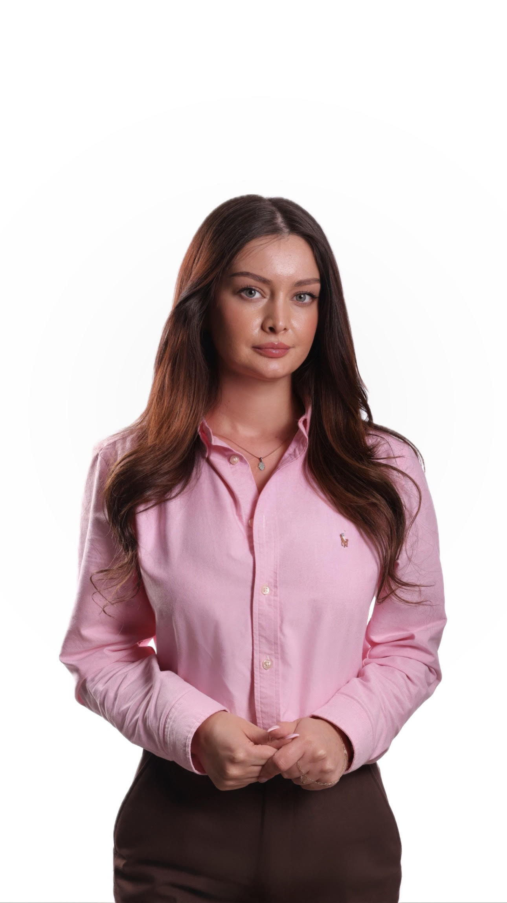

Florijeta Hulaj
Fulbright Alumni | Lecturer & Researcher in Computer Science @ AAB College | Junior Communication Expert - DCAF
Email: florijeta.hulaj@universitetiaab.com | Phone: (+383) 49302860
Nationality: Kosovo
About Me
Excellent communicator with a Computer Science background, strong desire to grow technical skills, and ability to learn new technologies fast.
Education
- Bachelor of Sciences in Computer Science - Software Engineering
AAB College (2012 – 2015)
aab-edu.net
- Master of Science in Computer Sciences
AAB College (2020 – 2022)
aab-edu.net
Experience
- Teaching Assistant & Student Coordinator – AAB College (2016 – 2022)
- Lecturer – AAB College (2022 – Current)
- Junior Communication Expert (Part-time) – DCAF (2022 – 2023)
- Fulbright Faculty Development Program – Carnegie Mellon University (2023 – 2024)
Skills
Languages: Albanian (Mother tongue), English (C1/C2)
Digital Skills: Data Science, SEO/SEM, Programming, Web & App Development
Conferences & Seminars
- 7th World Conference on Educational Technology (2017)
- 8th World Conference on Education (2019)
- Teaching & Learning Summit (2023)
- CyLab Partners Conference (2023)
Certificates
- Project Planning (2021)
- IEEE Authorship and Open Access Symposium (2022)